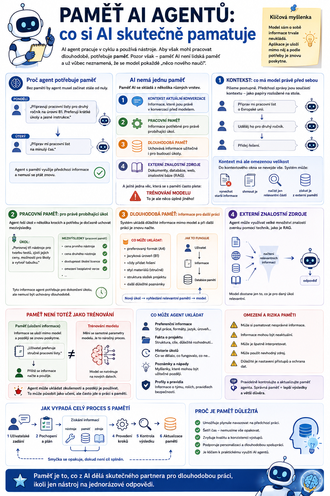

V předchozích dílech jsme si ukázali, že AI agent pracuje v cyklu a může používat různé nástroje. Aby ale mohl pracovat dlouhodobě, potřebuje ještě jednu důležitou schopnost: pracovat s informacemi z minulosti.
Právě tomu se říká paměť. Jenže paměť AI není totéž jako lidská paměť a už vůbec neznamená, že se model pokaždé „něco nového naučí“.

Proč agent potřebuje paměť
Představme si asistenta, kterému každý den zadáváme podobné úkoly.
V pondělí mu řekneme:
„Připravuji pracovní listy pro druhý ročník na úrovni B1. Preferuji krátké úkoly a jasné instrukce.“
V úterý:
„Připrav mi pracovní list na minulý čas.“
Pokud si agent předchozí informaci nijak neuchoval, nemusí vědět, pro koho pracovní list připravuje, jaká je jazyková úroveň ani jaký styl materiálů preferujeme.
Budeme mu tedy muset všechno zopakovat.
To není příliš praktické.
Agent s pamětí může naopak využít informace z předchozí práce a nemusí začínat pokaždé od nuly.
AI nemá jednu paměť
Když se řekne „AI si něco pamatuje“, může to znamenat několik různých věcí.
Je dobré rozlišovat alespoň čtyři základní vrstvy:
- kontext aktuální konverzace,
- pracovní paměť,
- dlouhodobá paměť,
- externí znalostní zdroje.
A pak existuje ještě jedna věc, která se s pamětí často plete:
To je ale něco úplně jiného.
1. Kontext: co má model právě před sebou
Nejjednodušší formou „paměti“ je aktuální kontext.
Píšeme například:
Připrav mi pracovní list o Evropské unii.
Potom doplníme:
Udělej ho pro druhý ročník.
A následně:
Přidej řešení.
Model nemusíme pokaždé znovu informovat, že mluvíme o stejném pracovním listu.
Předchozí zprávy jsou stále součástí kontextu konverzace.
Můžeme si to představit jako papíry rozložené na stole.
Dokud je má model před sebou, může z nich čerpat.
Kontext má ale omezenou velikost
Do kontextového okna se nevejde nekonečné množství informací.
Každý model má určitou kapacitu.
Jakmile je konverzace nebo souborů příliš mnoho, systém musí nějak rozhodnout, co model dostane k dispozici.
Může například:
- starší informace vynechat,
- shrnout je,
- načíst pouze relevantní části,
- získat informace z externí paměti.
Proto není dobré uvažovat:
„Řekl jsem AI něco před třemi měsíci, takže to určitě ví.“
Nemusí.
Záleží na tom, jak je konkrétní aplikace postavená.
2. Pracovní paměť: co agent potřebuje během úkolu
Agent často řeší úkol, který má několik kroků.
Například:
„Porovnej tři nástroje pro tvorbu testů, zjisti jejich ceny, možnosti pro školy a vytvoř tabulku.“
Agent během práce získá řadu mezivýsledků.
Například:
- cenu prvního nástroje,
- cenu druhého nástroje,
- dostupnost školní licence,
- omezení bezplatné verze.
Tyto informace potřebuje zachovat, aby je mohl na konci porovnat.
To můžeme označit jako pracovní paměť.
Je určena především pro právě probíhající úkol.
Po jeho dokončení nemusí být nutně zachována.
3. Dlouhodobá paměť
Dlouhodobá paměť funguje jinak.
Do ní může systém ukládat informace, které budou užitečné i při budoucích úkolech.
Například:
- Uživatel preferuje materiály na A4.
- V angličtině používá úroveň B1.
- Při tvorbě testů chce vždy také řešení.
- Projekt používá určitou strukturu složek.
Při další práci systém relevantní informace z paměti načte a vloží je modelu do kontextu.
To je důležitý detail.
Model většinou informaci nemá trvale uloženou uvnitř sebe.
Aplikace ji uloží někam mimo jazykový model a později ji znovu poskytne.
Zjednodušeně:
později:
nový úkol → vyhledání relevantní paměti → model
Paměť není totéž jako trénování
Tohle je asi nejdůležitější část celého článku.
Pokud si AI aplikace uloží:
„Uživatel preferuje stručné pracovní listy.“
neznamená to, že se změnil samotný jazykový model.
Model nebyl znovu natrénován.
Systém si pouze uložil informaci a při další práci ji může znovu předat.
Je to podobné, jako kdyby měl člověk poznámkový blok.
Do poznámkového bloku si zapíše:
Jan chce vždy PDF.
A při příští práci se do poznámky podívá.
Nevytvořil si nový mozek.
Jen použil uloženou informaci.
Trénování modelu je něco jiného
Při trénování se mění samotné parametry modelu.
Je to výpočetně velmi náročný proces a běžný AI agent jej při každém rozhovoru rozhodně neprovádí.
Proto je tvrzení:
„Agent se z každého úkolu učí.“
příliš zjednodušené.
Přesnější je říct:
Agent může ukládat zkušenosti nebo informace a později je znovu používat.
To může navenek působit jako učení.
Technicky ale často jde o práci s pamětí, nikoliv o nové trénování modelu.
Co může agent ukládat
Do dlouhodobé paměti lze ukládat mnoho druhů informací.
Preference uživatele
- Preferuje stručné odpovědi.
- Dokumenty chce na A4.
- Při výuce používá britskou angličtinu.
Informace o projektu
- Aplikace používá React.
- Zdrojové soubory jsou ve složce
/src. - Testy se spouštějí určitým příkazem.
Výsledky předchozí práce
- Tento problém už byl řešen.
- Uživatel zamítl variantu A.
- Poslední úspěšný postup byl B.
Důležité události
- Tento dokument byl aktualizován 15. května.
- Poslední verze pracovního listu byla schválena.
Taková paměť může výrazně zlepšit kontinuitu práce.
Epizodická a sémantická paměť
U pokročilejších agentních systémů se někdy používají pojmy převzaté z psychologie.
Epizodická paměť
Pamatuje si konkrétní události.
Například:
Minulý týden jsme vytvářeli pracovní list o Evropské unii.
Sémantická paměť
Uchovává obecné informace a fakta.
Například:
Uživatel učí druhý ročník angličtiny na úrovni B1.
Rozdělení není vždy technicky úplně ostré, ale pro návrh agentů je užitečné.
Jedna věc je totiž:
„Co se stalo?“
A jiná:
„Co o uživateli nebo projektu víme?“
Procedurální paměť: jak něco dělat
Existuje ještě třetí typ informace:
Například:
Při tvorbě pracovního listu vždy nejprve zjisti téma, potom jazykovou úroveň a nakonec vytvoř žákovskou a učitelskou verzi.
To už není fakt o uživateli.
Je to návod:
V agentních systémech mohou být podobné postupy uložené jako:
- instrukce,
- šablony,
- workflow,
- skills,
- příkazy.
A právě tady se paměť začíná prolínat s dalšími částmi agentní architektury.
Musí si agent pamatovat všechno?
Rozhodně ne.
A dokonce by to byl špatný nápad.
Čím více informací systém ukládá, tím větší vznikají problémy:
- zbytečné množství dat,
- horší vyhledávání,
- riziko zastaralých informací,
- bezpečnostní problémy,
- ochrana soukromí.
Dobrý systém musí rozhodovat nejen:
Co si zapamatovat?
ale také:
Co zapomenout?
To je kupodivu jedna z nejtěžších částí práce s pamětí AI.
Paměť může být zastaralá
Představme si, že má agent uloženou informaci:
Uživatel učí třídu 1A.
Další školní rok už ale učí 2A.
Pokud agent stále používá starou informaci, začne dělat chyby.
Paměť tedy musí mít určitou správu.
Je užitečné například ukládat:
- datum informace,
- zdroj,
- prioritu,
- možnost aktualizace.
Agent pak může poznat:
Tato informace je rok stará. Měl bych ověřit, zda stále platí.
Konfliktní informace
Další problém nastane, když má agent uložené dvě různé informace.
Například:
Materiály mají být na A4 na výšku.
novější paměť
Materiály mají být na A4 na šířku.
Co má agent udělat?
Ideálně by měl dát přednost:
- novější informaci,
- výslovnému aktuálnímu zadání,
- důvěryhodnějšímu zdroji.
Aktuální pokyn uživatele by měl zpravidla mít přednost před starší uloženou preferencí.
Paměť tedy nesmí být chápána jako absolutní pravda.
Je to jen další zdroj informací.
Paměť a soukromí
S dlouhodobou pamětí přichází také otázka:
Co vůbec smíme ukládat?
Pokud agent pracuje například ve škole, může narazit na osobní údaje.
Není rozumné ukládat do obecné paměti agenta všechno, co během práce uvidí.
Je potřeba rozlišovat:
a
citlivá data.
Agent například může potřebovat vědět:
Pracovní listy mají mít jednodušší instrukce.
Ale nemusí mít v dlouhodobé obecné paměti uložené osobní nebo citlivé informace o konkrétním žákovi.
Taková data mají být uložena v odpovídajícím bezpečném systému a načtena pouze tehdy, když jsou pro konkrétní úkol oprávněně potřeba.
Paměť versus databáze
Možná vás teď napadne:
Není AI paměť prostě databáze?
Často ano.
Technicky může být dlouhodobá paměť uložená například v:
- klasické databázi,
- dokumentovém úložišti,
- vektorové databázi,
- souborech,
- specializovaném paměťovém systému.
Rozdíl není ani tak v tom, kde je informace uložená.
Důležité je:
jak agent pozná, co má uložit a co má při další práci znovu načíst.
Jak agent hledá v paměti
Představme si, že má uložených deset tisíc poznámek.
Nemůže pokaždé všechny poslat jazykovému modelu.
Místo toho musí vybrat pouze relevantní informace.
Uživatel například zadá:
„Připrav pracovní list z angličtiny.“
Systém může v paměti vyhledat:
- úroveň B1,
- druhý ročník,
- preferovaný formát A4,
- pracovní list má obsahovat řešení.
Naopak nemusí načíst:
- preference týkající se cestování,
- informace o jiném projektu,
- starý rozhovor o počítačích.
To je jeden ze základních principů práce s agentní pamětí:
A tady se dostáváme k RAG
Mechanismus právě popsaného vyhledávání velmi připomíná další důležitou technologii:
U RAG systém nejprve vyhledá relevantní informace v externím zdroji a potom je poskytne jazykovému modelu.
Například:
↓
vyhledání relevantních dokumentů
↓
předání pasáží modelu
↓
vytvoření odpovědi
Stejný princip lze použít také u některých typů paměti.
Proto se hranice mezi:
a
znalostní databází
může v praxi částečně překrývat.
Příklad ze školy
Představme si učitelského agenta.
Má připravit:
„Pracovní list na zítřejší hodinu angličtiny.“
Z dlouhodobé paměti může získat:
- učitel preferuje stručné instrukce,
- pracovní listy mají mít řešení,
- materiály se tisknou na A4.
Z tematického plánu zjistí:
aktuální téma je Past Simple.
Z učebnice nebo znalostní databáze získá:
slovní zásobu a gramatiku z konkrétní lekce.
Agent tedy pracuje s několika různými druhy informací:
A právě jejich správné rozlišení je důležité.
Paměť ve vibe codingu
U coding agentů je dlouhodobý kontext obzvlášť užitečný.
Agent může potřebovat vědět:
- jak je projekt postavený,
- jaké technologie používá,
- jaké jsou konvence,
- jaké příkazy spouštějí testy,
- jaká architektonická rozhodnutí už byla provedena.
Bez těchto informací by při každém novém úkolu znovu zkoumal celý projekt.
S vhodnou pamětí nebo projektovými instrukcemi může navázat mnohem rychleji.
Například:
Používej již existující API.
Před každou změnou spusť testy.
To je praktická forma „paměti“ projektu.
Kdy je paměť nebezpečná
Paměť agenta může práci velmi usnadnit.
Může ale také způsobovat chyby.
Typické problémy jsou:
- Zastaralá informace – agent používá něco, co už neplatí.
- Nesprávná informace – jednou si něco špatně uloží a potom chybu opakuje.
- Příliš mnoho paměti – relevantní informace se ztratí mezi stovkami nepodstatných.
- Špatně zvolená informace – agent si při řešení úkolu načte nesouvisející vzpomínku.
- Citlivé informace – systém uchovává něco, co vůbec uchovávat neměl.
Paměť proto není funkce typu:
„zapneme a je hotovo.“
Musí být navržena stejně pečlivě jako ostatní části agentního systému.
Agent se tedy „učí“, nebo ne?
Nejrozumnější odpověď je:
Záleží na tom, co slovem učí myslíme.
Pokud tím myslíme:
mění při každém úkolu parametry samotného jazykového modelu,
pak obvykle ne.
Pokud tím myslíme:
ukládá informace, zkušenosti nebo postupy a později je využívá,
pak ano, tak může agentní systém fungovat.
Je ale dobré tyto dva procesy nezaměňovat.
Zapamatujte si
AI agent může používat několik druhů paměti.
- Kontext – obsahuje informace, které má model právě k dispozici.
- Pracovní paměť – uchovává informace potřebné během právě řešeného úkolu.
- Dlouhodobá paměť – ukládá vybrané informace pro budoucí práci.
- Znalostní zdroje – obsahují dokumenty, databáze a další informace, které může agent podle potřeby vyhledávat.
A to nejdůležitější:
Paměť AI není totéž jako nové trénování jazykového modelu.
Ve většině případů se informace ukládá mimo model a při další práci se mu znovu předloží.
Co bude následovat
Teď už máme agenta, který:
Zbývá ale důležitá otázka.
Jak může odpovídat podle našich vlastních dokumentů, například školního řádu, metodiky, učebnice nebo firemní databáze, když tyto informace nemusely být vůbec součástí jeho tréninku?
Právě zde přichází na scénu:
V příštím díle si ukážeme, jak funguje princip:
a proč je RAG jednou z nejpraktičtějších technologií pro tvorbu skutečně užitečných AI agentů.